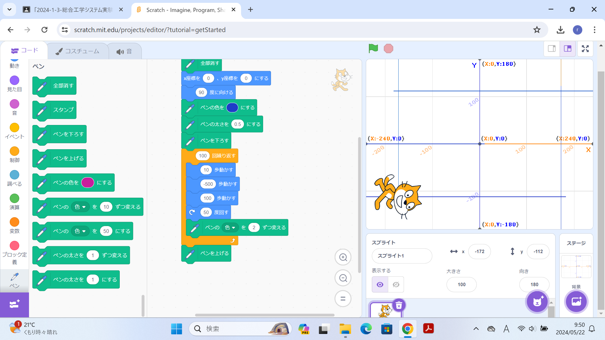
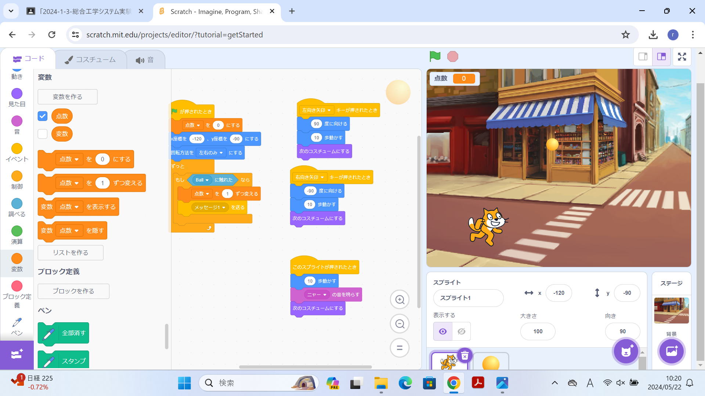

1週目のレポート ： 公大高専１年実習I-1
3a班7番 ニックネーム てつてつてつ207
第1週目
1-1 サイエンスアート

1.内容
スクラッチを使って、
➀猫を動かすプログラム
➁その動いた猫の動きに合わせて線を引くプログラム
➂線を描くたびに色を変えるプログラム
➃繰り返し移動させて図形を描くプログラム
を作成した。
2.感想
小・中学校の時に使っていたタブレットにスクラッチが入っていたのですが、
私の通っていた学校ではアクセスが禁止されていたため、スクラッチを使えませんでした。
なので、今回スクラッチを真剣に触ってみて、いろんな機能があることを知れたので良かったです。
1-2 ゲーム

1.内容
猫を移動させて落ちてきたボールをつかむプログラムを作成した。
旗が押されたときにx=-120,y=-90に移動し、スプライトに触れたら動き、「ニャー」と音が鳴り
コスチュームを変えるようになっている。
キーボードの矢印キーで左右に動くようにした。
2.感想
プログラミングはいくつものブロックが連なっていて複雑そうなイメージがありました。
ブロック一つ一つの意味をしっかり理解して組んでいくことが大切だなと思いました。
1-3 ホームページ作成
私のホームページ
1.内容
提出用の自作ホームページを作成するための設定とID・パスワードの設定などを行った。
登録完了後、ホームページを作成し、URLを提出した。
2.感想
ホームページを作るサイトには英語だけが書かれていて、
どこを押せば良いかわからなくなりそうでした。
レポート作成も慣れていきたいです。
各ページへのリンク
1週目のレポート
2週目のレポート
3週目のレポート
私のホームページ